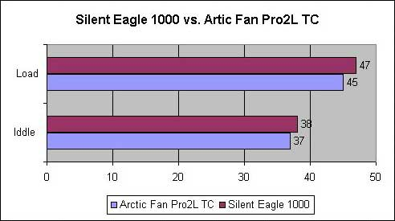

Sharkoon Silent Eagle 1000
Kaip gerai, kad vasarėlė vis dar čia. Tai mano pats mėgstamiausiais metų laikas. Laikas, kai galima dienų dienas kepintis saulutėje, mirkti ežerėlyje ir kramsnoti įvairius kepsniukus :) Bet ką daryti po ilgos tinginiavimo dienos, kai nebėra ką veikti bei dėl tvankumo neima miegas, o čia dar zirziantis kompiuteris pašonėje kaip tyčia trukdo mėgautis naktinio miesto ošimu. Na visi pacifistai iškart pasiūlys išjungi kompiuterį, bet, manau, kad jūs, kaip ir aš, žinot kaip naudinga nakty laikyti jį įjungta. Taip pat, žinot, kaip sudėtinga taisyklingai ir efektyviai nutildyti jūsų plieninį draugą. Siūlyčiau visus panašius darbus pradėti nuo korpuso ventiliatorių keitimo, nes jie dažniausiai būna patys garsiausi ir bene reikalingiausi tokiu karštu oru. Taigi pristatau jums tylųjį „Sharkoon Silent Eagle 1000“!
Pirmas įspūdis
Jau ne pirmą kartą „Sharkoon“ mane nustebina (panaršę mūsų apžvalgų skiltį, rasite kelis senesnius Sharkoon gaminių aprašymus). Šį kartą jie mane „papirko“ gerai apgalvoto dizaino įpakavimu ir maloniais niekučiais (firminiu tušinuku ir raktų/mob. telefono dirželiu).
Nors įpakavimas nėra labai spalvingas, bet ganėtinai informatyvus. Galinėje pusėje anglų ir vokiečių kalbomis pateikta detali techninė specifikacija, įpakavimo turinio sąrašas ir naujų technologijų, panaudotų kuriant šį aušintuvą, aprašymas.
Žvilgsnis iš arčiau
Dėžutės turinys buvo tikrai vokiškas. Nieko nereikalingo, pilnai išnaudoti visas dėžutės tūris, o pridėti aksesuarai labai universalūs. Taigi štai kas buvo viduje:
- Keturi varžtukai
- Penki guminiai tvirtinimo „strypeliai“
- Maitinimo kabelis (4 pin to 3 pin molex)
- Montavimo instrukcija
Kaip matote, aušintuvas tikrai įdomus. Pirmiausiai akį patraukia įdomi spalvų komponuotė bei įdomus menčių dizainas. Papildomo žavumo prideda ir „sleevintas“ maitinimo kabelis, kuris, kaip teigia gamintojas, taip pat puikiai apsaugo kabelį nuo įvairiu fizinių pažeidimų, kaip ir šauniai atrodo :)
Kaip ir sakiau truputėlį aukščiau, menčių dizainas tikrai labai įdomus. Jos sukurtos golfo kamuoliuko principu ir savo paviršiuje turi begales mažyčių įdubimų. Tik nepamanykit, kad tai tik eilinė grožybė. Iš tikro tai labai gerai apgalvotas inžinierinis sprendimas. Nenorėdamas perdaug gilintis į dujų mechaniką paaiškinsiu tik patį įdubimų veikimo principą pasinaudodamas golfo kamuoliuko pavyzdžiu. „Duobėtas“ kamuoliukas sugeba nuskirsti beveik keturis kartus ilgesnę distanciją nei lygus (be įdubimų), nes šios įdubos sukelia oro turbulenciją aplink kamuoliuką, kuri sumažina oro pasipriešinimą. Šiuo principu veikia ir „Silent Eagle“ aušintuvas. Įdubos jam padeda esant mažesniems sūkiams (RPM) pratraukti didesnį oro srautą (CFM) ir padaryti tai žymiai tyliau nei kitiems tokius pačius oro srauto parametrus turintiems aušintuvams.
Sharkoon taip apgalvojo ir saugos problemą. Gamintojas užapvalini aušintuvo menčių kampus, todėl netyčia įkišus į jį pirštą, o man taip dažnai atsitinka :), tikrai nieko nenutiks.
Priedai, kaip matote, tikrai standartiniai. Pridėti varžtukai ir maitinimo kabelis jau tikrai nebe naujiena. Maitinimo kabelis gal tik tuo įdomus, kad turi „sense“ pino prijungimo prie motininės plokštės laidą. Taip jūs, net ir prijungę aušintuvą tiesiai prie maitinimo bloko, galėsite stebėti jo sūkius. Šiaip tai nėra labai logiška, nes jeigu jūs galite prijungti „sense“ pino kištuką prie jūsų motininės, tai jūs ir taip galite prijungti patį ventiliatorių, nesinaudodami pridėtu kabeliu. O jei laisvų lizdų motininėje neturi, tai jums nereikalingas ir „sense“ pino laidas :) Na bet gal aš ir klystu :) Šiaip ar taip pridėtas kabelis tikrai yra geras, tik gaila „nepasleevintas“, o tai moderiams gali nepatikti.
Įdomiausias priedas yra guminiai tvirtinimo „strypeliai“. Jais aušintuvą galima įmontuoti labai paprastai, nesinaudojant jokiais papildomais įrankiais (visas montavimo pricesas aprašytas pridėtoje instrukcijoje). Iš esmes, jų pagrindinė funkcija yra maksimaliai sumažinti aušintuvo vibraciją, bet tai „Silent Eagle 1000“ visai neaktualu, nes jis visai nevibruoja :)
Techniniai parametrai
- Dydis: 80 x 80 x 25 mm
- Greitis: 1000 RPM
- Oro srautas: 11.4 CFM / 19.3 m3/h
- Energijos suvartojimas: 12 V, 0.12 A
- Galia: 1.44W
- Garsumas: 8.9 dB (A)
Montavimas
Manau, šis procesas perdaug paprastas ir nevertas detalaus aprašinėjimo, o sudėtingesnis montavimas, pasinaudojant guminiais strypeliais, puikiai aprašytas pridėtoje instrukcijoje. Viskas paprasta kaip 2*arctan20-8 ;) Na, bet vis tiek pateiksiu prieš ir po nuotraukas:
Testavimas
Štai mano PC konfigūracija:
- Mainboard DFI Infinity NFII Ultra
- CPU AMD AlthonXP 2400+ @ 2000mhz
- RAM PQI DDR 2x256 Mb 266Mhz
- HDD Seagate Barracuda 40 GB 7200rpm + 120 GB 7200rpm
- Video ATI Radeon 7500 64 MB VIVO
- DVD+/-RW LiteON DVD+/-RW 8x4x8x12x SOHW-812S
- PSU Silver Power 350W (sleeved)
- OS W2K SP4
Kaip buvo testuota:
Idle: Kompiuteris, dirbantis „tuščia eiga“, buvo paliekamas geram pusvalandžiui.
Load: Kompiuteris geras 20 min. buvo kankinamas sintetiniais testais, tokias kaip PCMark 2001, 3DMark 2001, SiSandra, SuperPI, Prime95 ir kt. Dažniausiai šios programos buvo leidžiamos vienu metu, siekiant kuo labiau apkrauti procesorių. Kambario temperatūra buvo tokia pati, kaip ir idle būsenos metu…
Noriu visus perspėti, kad aušintuvą testavau labai karštą dieną, kai lauke, pavėsyje, buvo >30C šilumos. Manau, kambaryje buvo ne ką mažiau.. Todėl, jei nusipirksite šį aušintuvą ir pas jus temperatūra bus mažesnė nei testų rezultatuose, labai nenustebkite :)
Gerai, užteks tuščiažodžiauti.. Štai ir rezultatai:

Rezultatai nėra labai džiuginantys, bet labai lengvai paaiškinami. Paprasčiausiai, kadangi niekur neradau 1000rpm aušintuvo teko „Silent Eagle 1000“ rezultatus lyginti su „Arctic Fan Pro2L TC”, kuris, kaip jau žinote iš jo aprašymo, didina savo apsukas, padidėjus aplinkos temperaturai. Todėl rezultatai ir skiriasi, nors iš tikro yra beveik ekvivalentūs, suvienodinus aušintuvo parametrus :
Pliusai
- Labai tylus
- Įdomus dizainas
- Visai nevibruoja
- Pagrindinis maitinimo kabelis „susleevintas“
- Neblogai aušina (kaip aušintuvas su 1000rpm ir 8.9db parametrais)
- Pridėti antivibraciniai guminiai stulpeliai
- Galimybė įsigyti Lietuvoje (Infomegoje)
Minusai
- Didelių minusų nepastebėta
Kaip matote, aušintuvas tikrai geras beveik visais atžvilgiais. Jei jums reikia visiškos tylos, o ne maksimaliai žemų temperatūrų, pirkite tiktai jį. Na, o jeigu jums tyla nėra tokia aktuali, rinkitės vyresni broliuką „Silent Eagle 2000“ :) Šiaip ar taip, viską susumavęs ir apsvarstęs, suteikia šiam aušintuvai 9 balus ir 10 galimų. Modding.lt komanda dėkoja firmai Sharkoon už apžvalgai pateiktą aušintuvą. Beje, jei norėsite pakomentuoti mano straipsnį arba pareikšti savo nuomonę, apsilankykite Modding.lt forume.


{kind=link}
{kind=link}
{kind=link}
{kind=link}
{kind=link}
{kind=link}
{kind=link}
{kind=link}
{kind=link}
{kind=link}
{kind=link}
{kind=link}